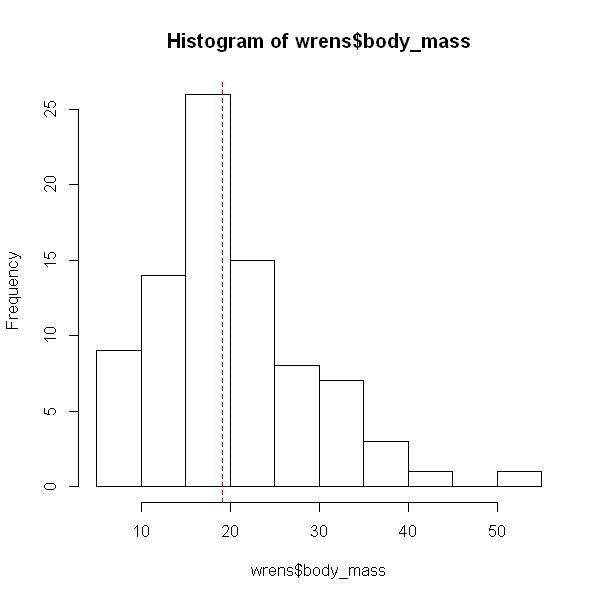
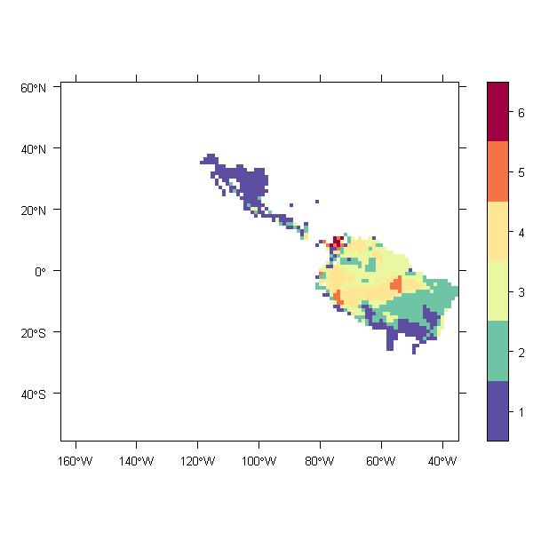

>
Large wrens species richens
SUBSETTING AT SPECIES LEVEL

|
rangeMap.save() takes a named list as a subset argument. Names refers to BIO tables (i.e. species level) and/or MAP and metadata_rages tables (i.e. assambladge level) while the corresponding character strings contain the SQL WHERE elements. |
#Start a new project require(rangeMapper) dbcon = rangeMap.start(file = "wrens.sqlite",dir = tempdir() , overwrite = TRUE) f = system.file(package = "rangeMapper", "extdata", "wrens", "vector_combined") global.bbox.save(con = dbcon, bbox = f) gridSize.save(dbcon) canvas.save(dbcon) r = readOGR(f, "wrens", verbose = FALSE) processRanges(spdf = r, con = dbcon, ID = "sci_name") data(wrens) bio.save(con = dbcon, loc = wrens, ID = "sci_name")
hist(wrens$body_mass) abline(v = median(wrens$body_mass), col = 2, lty = 2)

# Mapping
rangeMap.save(dbcon, biotab = "wrens", subset = list(BIO_wrens = paste("body_mass >", median(wrens$body_mass)) ),
tableName = "large_wrens_species_richness")
# Fetch and plot maps m = rangeMap.fetch(dbcon) plot(m, scales = TRUE )

[1] "R version 2.14.0 (2011-10-31)" [1] "rangeMapper 0.0-6.6" [1] "website generated using ascii 2.1"